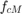
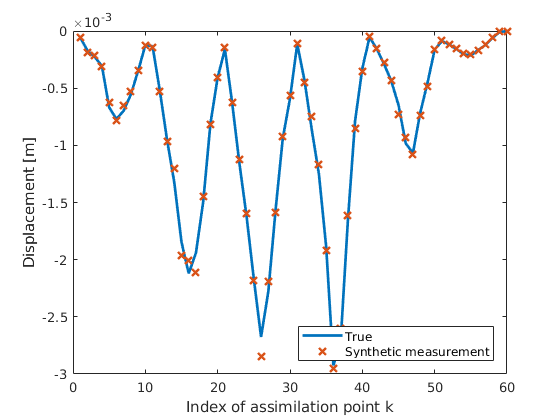
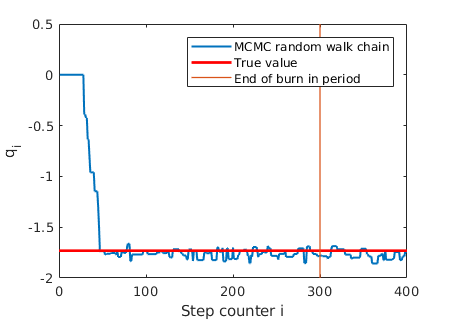
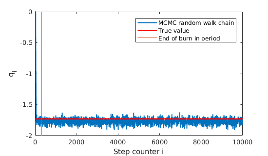
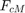
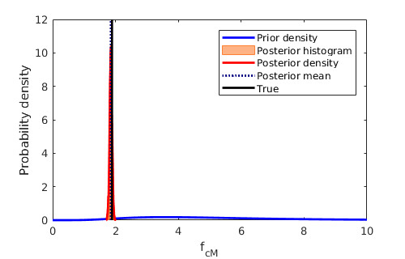
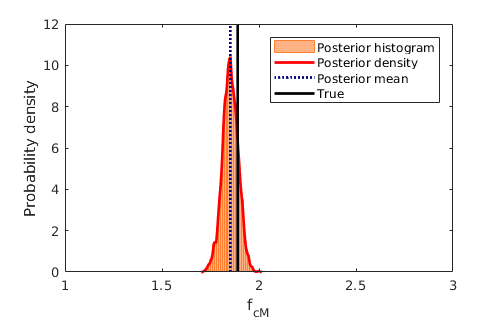

Example 5 -- sampling from the posterior of  by sampling
This example shows how to generate samples of the posterior distribution of the scaling factor when the field is homogenous and thus can be expressed with one random variable
Contents
Get prior distribution, proxi model, error model and measurement
see Initiation of updates for the fist scenario
Initiate_updates_RV;
method = 'MCMC';
 Choose a starting point
q0 =Q.mean;
Choose proposal density
variance of the prior
prior_var=Q.var;
% standard deviation of the proposal density
sigma_p = sqrt(prior_var)*0.15;
P=generate_stdrn_simparamset(sigma_p);
Define the likelihood
PCE surrogate of the measurable
Y_func = @(xi)gpc_evaluate(upsilon_k_alpha, V_y, xi);
% the likelihood function
q2likelihood = @(q)E.pdf(z_m - Y_func(q2xi(q)));
Do the random walk
desired number of samples
N = 10000; % do the random walk to sample from the posterior of X q2pdf_func=@(q) (q2likelihood(q)*Q.pdf(q)); % Run metropolis hasting sampler q_j=q0; Qs=[]; for j=1:N xn=q_j+P.sample(1); a=funcall(q2pdf_func,xn)/funcall(q2pdf_func,q_j); a=a*P.pdf(q_j-xn)/P.pdf(xn-q_j); if a>=1 || rand<a q_j=xn; end Qs=[Qs q_j]; end Qs;
plot the zoomed out part of the chain
h_zoomed = figure(); h_zoomed.Position = [680 650 450 320]; plot(Qs', 'LineWidth', 1.5) hold on % plot the true value plot(xlim(),[q_true, q_true], 'r', 'LineWidth', 2) % zoom out to burn in period xlim([0,400]) ylim([-2,0.5]); % plot the end of burn in period N_burn = 300; plot([N_burn, N_burn], ylim(), 'LineWidth', 1) xlabel('Step counter i') ylabel('q_i'); legend('MCMC random walk chain', 'True value', 'End of burn in period') % save figure save_png(h_zoomed, 'MCMC_chain_zoomed', 'figdir', 'figs', 'res', 600) % plot the chain h= figure(); h.Position = [680 650 550 320]; ylim([-2,0.5]); plot(Qs', 'LineWidth', 1.5) hold on % plot the true value plot(xlim(),[q_true, q_true], 'r', 'LineWidth', 2) % plot the end of burn in period plot([N_burn, N_burn], ylim(), 'LineWidth', 1) xlabel('Step counter i') ylabel('q_i'); legend('MCMC random walk chain', 'True value', 'End of burn in period') % save figure save_png(h, 'MCMC_chain', 'figdir', 'figs', 'res', 600) 
Cut the chain
Qs = Qs(:,N_burn:end);
Map samples to
samples of the posterior 
f_cm_j = q2f(Qs);
Compute statistics
mean of the posterior
f_cm_mean = mean(f_cm_j ,2);
% variance of the density
f_cm_var = var(f_cm_j , [],2);
Show statistics
display(strvarexpand('Prior mean: $F_cm.mean$')); display(strvarexpand('Prior variance: $F_cm.var$')); display(strvarexpand('True value: $f_cm_true$')); display(strvarexpand('Posterior mean: $f_cm_mean$')); display(strvarexpand('Posterior variance: f_cm_var=$f_cm_var$'));
Prior mean: 5.5 Prior variance: 10 True value: 1.89 Posterior mean: 1.85213 Posterior variance: f_cm_var=0.00162384
Plot prior and posterior densities
bin_width = 0.01; plot_prior_and_posterior_densities 